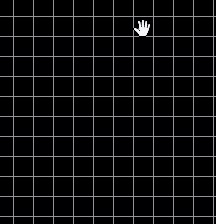
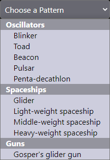

Welcome to Conway's Game of Life
The Game of Life, also known simply as Life, is a cellular automaton
devised by the British mathematician John Horton Conway in 1970.
The world of Game of life is typically a two-dimentional infinitely
long plane. But in this application we are restricted to the size
of the screen. This plane is divided into small square cells with
each of them in two possible states, live or dead.
The rules of Game of Life are:
- A live cell with fewer than two live neighbouring cells dies (underpopulation)
- A live cell with more than three live neighbouring cells dies (overpopulation)
- A live cell with two or three live neighbouring survives
- A dead cell with three neighbourig cells becomes a live cell (reproduction)
Credits: For more info
Click here.
Click and drag on the board to create live cells

Use these options to do your simulation
- Next Gen - To display the next generation
- Play - To start the simulation
- Pause - To stop the simulation
- Clear - To clear the board
You can set the pace of the simulation even in real time
You can choose pre-built patterns to run your simulation. Try one it will amuse you!

Rest In Peace
John Horton Conway
26 December 1937 – 11 April 2020
Have Fun!
For the source code of this application checkout my
GitHub.